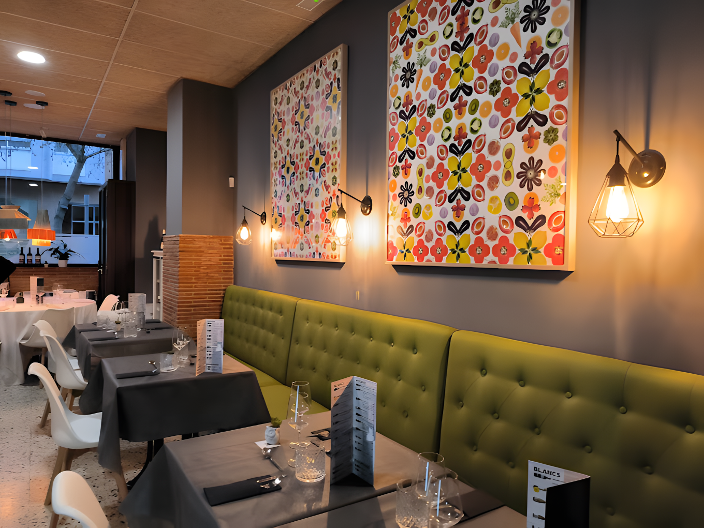

Aboccaperta Plaza del Rei
El local original, situado en la emblemática Plaza del Rei del centro histórico de Tarragona. Terraza con vistas a la plaza y ambiente mediterráneo.
Reservar mesa
Auténtica cocina italiana con propuesta contemporánea y llena de sabor. Dos locales en el corazón de Tarragona, galardonados con el premio a la Mejor Pizza de España 2024.

Aboccaperta nace de la pasión de Matteo Grippo por la pizza de autor. Una propuesta que combina la tradición italiana más auténtica con técnicas contemporáneas, ingredientes de primera calidad y una masa ligera e innovadora.
En 2024, Aboccaperta fue galardonado con el premio a la Mejor Pizza de España en el concurso Pizza por Pasión del Forum Gastronòmic Barcelona, consolidando su posición como referente de la pizza contemporánea en el país.
Dos espacios en el corazón de Tarragona donde disfrutar de la auténtica cocina italiana contemporánea con cartas propias y ambientes únicos.
El local original, situado en la emblemática Plaza del Rei del centro histórico de Tarragona. Terraza con vistas a la plaza y ambiente mediterráneo.
Reservar mesaEl segundo local en el barrio del Puerto, con un ambiente más íntimo y una carta que explora nuevas creaciones junto a los clásicos de la casa.
Reservar mesaPizzas contemporáneas, pastas frescas y propuestas italianas elaboradas con productos de máxima calidad, preparados al momento.


No ha sido fácil, pero lo hemos conseguido gracias a la dedicación diaria y al apoyo de nuestros clientes, amigos y familia.
4,4 sobre 5 en Google Maps con 578 reseñas verificadas. Esto es lo que opinan quienes nos han visitado.
La comida fue espectacular, tanto los entrantes como las pizzas. La relación calidad-precio es muy buena.
Servicio excelente de la camarera italiana, nos aconsejó muy bien sobre el vitello tonnato. Comida de calidad a buen precio.
Realmente ESPECTACULAR. La mejor comida italiana que he probado en España.
Lugar perfecto tanto con familia como con amigos. Pizzas super premiadas y un personal fantástico.
La pizza de Matteo me sorprendio muy positivamente. Masa innovadora y ligera, productos de calidad.
Este sitio es una joya. Comida deliciosa y gran servicio. Nos comimos hasta la ultima miga.
Si. Tenemos dos restaurantes en Tarragona: el local original en Plaza del Rei, 4 y Aboccaperta 2.0 en Carrer Smith, 37. Ambos ofrecen pizza contemporánea italiana con carta propia y ambientes diferentes.
Plaza del Rei: sábados y domingos de 13:00 a 15:30; de martes a domingo de 20:15 a 23:00. Cerrado los lunes. Carrer Smith: de martes a domingo de 13:00 a 15:30; de martes a sábado de 20:15 a 23:00. Cerrado domingos noche y lunes.
Si. Puedes reservar a través de nuestra web o llamando al 667 88 34 06 (Plaza del Rei) o al 630 16 10 61 (Carrer Smith). Los fines de semana y festivos hay dos turnos de cena: el primero a las 20:15 y el segundo a las 22:30.
Ofrecemos cocina italiana contemporánea, con especial protagonismo de la pizza de autor elaborada con ingredientes de alta calidad y masa de larga fermentación. En 2024 ganamos el premio a la Mejor Pizza de España en el concurso Pizza por Pasión del Forum Gastronòmic Barcelona.
Si. A través de nuestra web puedes comprar vales regalo para regalar una experiencia gastronómica en cualquiera de nuestros dos locales.
Dos locales en el centro de Tarragona. Reserva tu mesa y disfruta de la auténtica cocina italiana contemporánea.